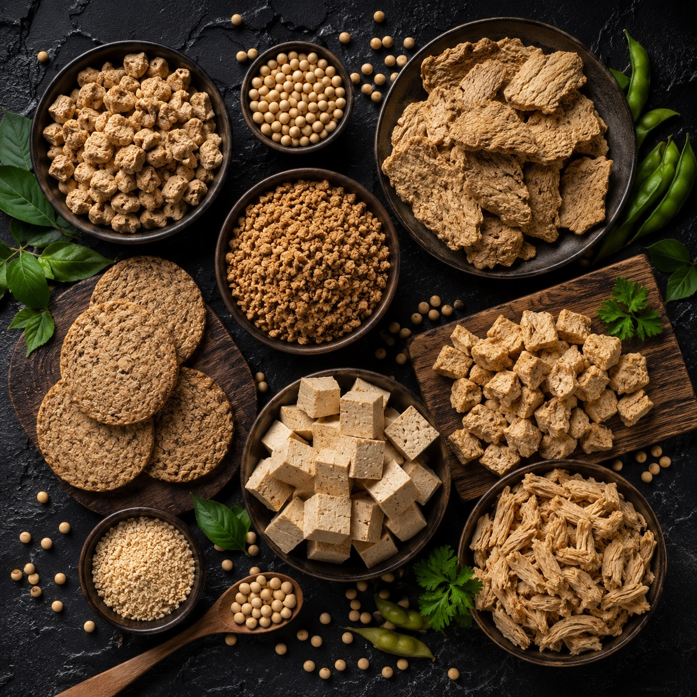

01
Специи
Перец, чеснок, смеси и сухие ингредиенты для торговли и производства.

02
Усилители вкуса
Пищевые добавки, глютамат натрия и технологические позиции для рецептур.

03
Белки
Соевый изолят и белковые ингредиенты для пищевых задач и оптовых заказов.